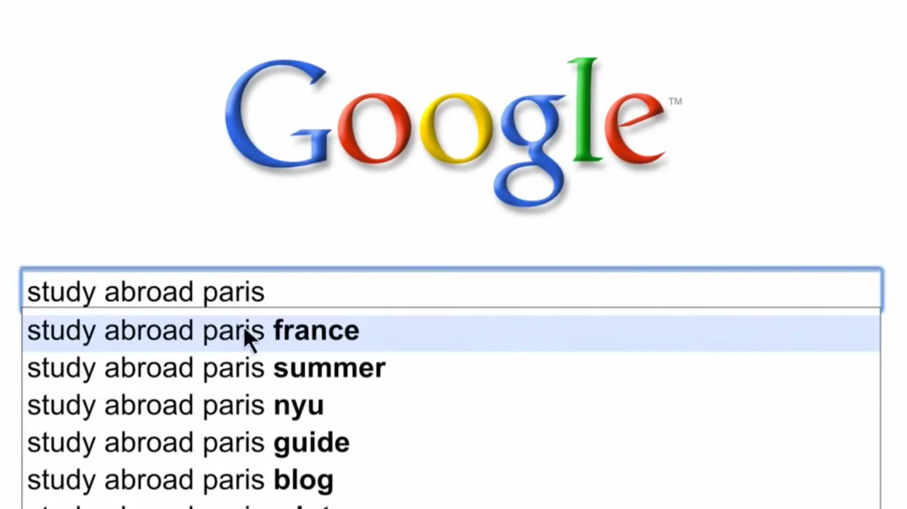

Writing /
Why Google’s Gemini Ad Works (and Why It Feels So Familiar)

Every AI company right now is racing to tell you how smart its model is. More parameters. More benchmarks. More claims about the future.
Google didn’t do that.
Instead, its Gemini ad does something far more difficult, it makes AI feel emotionally inevitable. Familiar. Almost boring in the best possible way. And if that feeling triggered a sense of déjà vu, it’s because Google has already pulled off this trick once before with Parisian Love.
Different product. Same emotional engineering.
This Ad Isn’t Selling Intelligence , It’s Selling Relief
The most striking thing about the Gemini ad is how little it tries to impress you. There’s no spectacle, no technical flexing, no attempt to dominate the narrative around AI supremacy. What it shows instead are people mid-thought: drafting, revising, struggling, iterating, getting unstuck.
Gemini isn’t framed as a breakthrough. It’s framed as a quiet collaborator that reduces friction at the exact moment friction usually appears.
That choice matters. People don’t wake up wanting “more intelligence.” They want less confusion. Less friction. Fewer blank pages. The Gemini ad understands that the emotional promise of AI isn’t power , it’s momentum.
And momentum is far more relatable.
Parisian Love Taught Google This Lesson a Long Time Ago
When Parisian Love ran in 2010, it didn’t explain search. It didn’t explain algorithms. It didn’t even show a human face. It trusted that a sequence of search queries could carry an entire emotional arc … curiosity, uncertainty, longing, commitment.
The brilliance wasn’t the romance. It was the realism.
Typing, deleting, refining queries mirrored how people actually think. The search bar became an externalized inner voice. Google didn’t feel like software, it felt like a witness.
The Gemini ad uses the same psychological move, just adapted for a generative interface. Prompts replace queries. Drafts replace searches. But the emotional loop is identical: thought → uncertainty → refinement → clarity.
Google isn’t demonstrating capability. It’s demonstrating process.
Restraint Is the Real Signal of Confidence
What makes the Gemini ad especially effective is how restrained it is in a category obsessed with noise. There’s no fear-based framing. No “this will change everything” narration. No attempt to dramatize intelligence itself.
The pacing is slow. The visuals are grounded. The tone assumes trust instead of demanding it.
That restraint is a brand signal. It says: this technology doesn’t need to announce itself to be important. It can simply exist alongside you.
That’s the same moment Search reached maturity, when it stopped feeling like “tech” and started feeling like infrastructure.
Google’s Enduring Advantage Is Emotional Translation
This has always been Google’s most underrated strength: translating complexity into something emotionally ordinary.
Search never felt like an algorithm. Maps never felt like satellite math. Photos never felt like machine learning. Each product was framed as an extension of human memory, not a replacement for it.
The Gemini ad continues that lineage. AI isn’t positioned as something you need to understand, manage, or fear. It’s positioned as something that fits how you already think … messy, iterative, unfinished.
That’s an incredibly hard tone to strike, especially in a moment when AI anxiety is high and hype is louder than ever.
This Is Bigger Than an Ad
The Gemini spot isn’t just marketing. It’s positioning for the next decade.
Google isn’t trying to win the argument about which model is smartest. They’re trying to win the moment when AI becomes invisible, when it’s no longer a decision, just a reflex.
That’s how Search won. That’s what Parisian Love cemented emotionally. And that’s what Gemini is quietly aiming to repeat.
Final Thought
Great brand ads don’t explain the future.
They make it feel like it was always headed this way.
Google once did that with a blinking cursor in a search bar.
Now it’s doing it again, this time with AI.
Same emotional playbook. New interface. Same confidence.